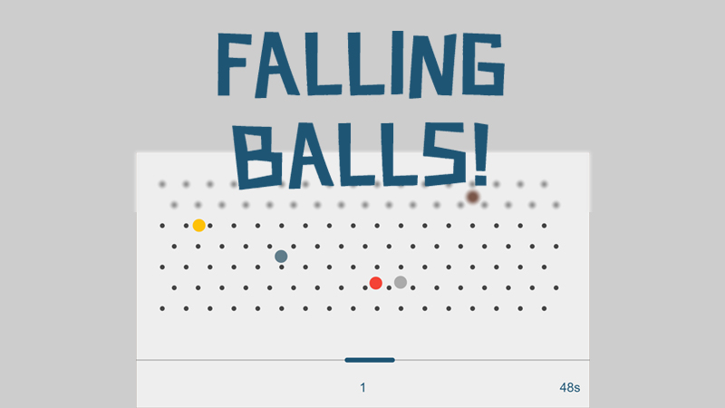

-
Falling Balls
-
Falling Balls is a light HTML5 game using the new fearture of canvas. Two modes are provided: "60 seconds" and "100 points". You have to catch the fallings balls as many as possible using the blue racket control by your keyboard or touch gesture.
Codes are wiritten in JavaScript with the help of Jquery. The scenes and elements of the game are structured by class form. - JS Try it
{% if site.duoshuo_username %}
-
Falling Balls is a light HTML5 game using the new fearture of canvas. Two modes are provided: "60 seconds" and "100 points". You have to catch the fallings balls as many as possible using the blue racket control by your keyboard or touch gesture.
-
Law
Master degree candidate of Sun Yat-sen University